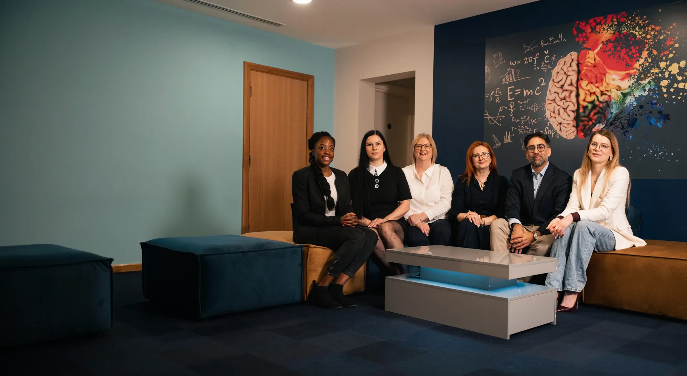
About Refocus The Brain Hub
Meet the minds behind Refocus
Built by clinicians. Led by science. Designed for modern minds.
Who we are
Psychiatry, neurodevelopment and brain science, in one team
Our team is made up of consultant psychiatrists, psychologists, advanced nurse practitioners and neuroscience specialists with extensive NHS and private-sector experience. We work at the intersection of psychiatry, neurodevelopment and cutting-edge brain science.
Every assessment is led by a senior clinician. Around them, psychologists, prescribers and brain mapping specialists work as one multidisciplinary team, so the care you receive is joined up from the first conversation to the plan you leave with.
Consultant-led
Assessments led by consultant psychiatrists and a consultant clinical psychologist.
Senior NHS leadership
Medical leads, clinical leads, safeguarding leads and an Expert Clinical Advisor to NHS England.
Neuroscience-informed
qEEG brain mapping and neuromodulation alongside traditional psychiatric care.
Across the lifespan
Children, teenagers, adults and families, including complex and overlapping needs.
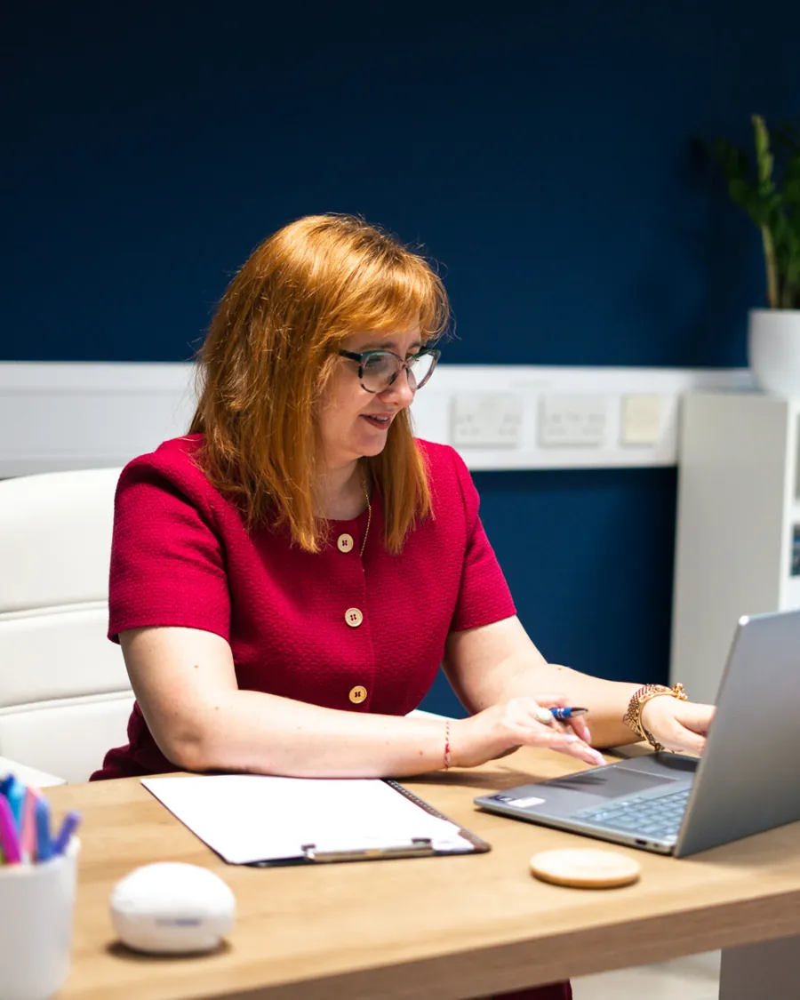
- MRCPsych
- ADOS-2
- ADI-R
Our founder
Dr Miriana Vrajitoriu
Consultant Child & Adolescent Psychiatrist | Founder & Medical Director
Dr Miriana Vrajitoriu is a Consultant Child and Adolescent Psychiatrist with over two decades of experience in psychiatry and more than 15 years working at consultant level in the UK.
She has worked across both NHS and independent services, with experience spanning inpatient care, community CAMHS, and specialist neurodevelopmental pathways.
“Psychiatry alone is often not enough. From this insight, Refocus The Brain Hub was created.”
Until January 2025, Dr Vrajitoriu was an NHS Consultant Child and Adolescent Psychiatrist within South West Yorkshire NHS Foundation Trust, based in Kirklees CAMHS. In this role, she served as Medical Lead for the Neurodevelopmental Pathway and as the Trust Nominated Safeguarding Doctor, providing senior medical leadership at Trust level to ensure statutory safeguarding responsibilities for children and vulnerable adults were met to the highest standard.
As Neurodevelopmental Pathway Lead, Dr Vrajitoriu played a central role in developing ADHD and autism services, supervising ADHD nurse prescribers and medical colleagues, and ensuring NICE-compliant, evidence-based and patient-centred pathways.
Alongside her NHS work, Dr Vrajitoriu has extensive experience in independent ADHD and ASD assessments, medico-legal psychiatry, and complex diagnostic evaluations for children and young people.
She is ADOS-2 and ADI-R trained, with advanced experience working with young people presenting with:
- ADHD
- Autism
- Learning disabilities
- Tics and Tourette’s syndrome
- Complex neurodevelopmental profiles
Her specialist training includes work at CNDS Newcastle, a national second-opinion autism service, as well as experience as an Associate Specialist in a low-secure inpatient unit for young people with learning disabilities.
Dr Vrajitoriu is GMC-registered on the Specialist Register as a Consultant Child & Adolescent Psychiatrist and is a Member of the Royal College of Psychiatrists.
She is also a qualified Independent Systemic Family Psychotherapist, recognised by the Romanian Federation of Psychotherapy and EFTA, reflecting her strong commitment to systemic, family-focused care.
After many years in senior NHS leadership roles, Dr Vrajitoriu made the decision in January 2025 to step down from NHS practice to clinically lead and develop an independent service built around a broader understanding of the brain.
This decision reflected a long-held professional insight: psychiatry alone is often not enough. From this insight, Refocus The Brain Hub was created.
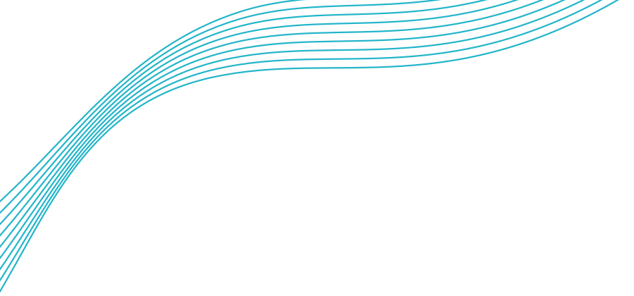
Our team
The clinicians you will meet
Consultant psychiatrists, psychologists and advanced practitioners, each bringing years of senior NHS and private experience. Select a profile to read more.
-
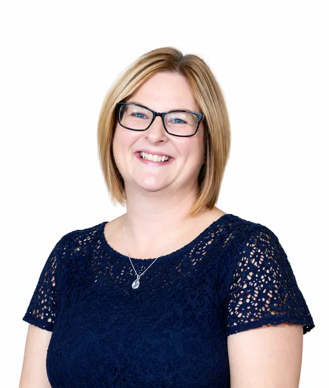
Claire McGuinness
Advanced Nurse Practitioner | ADHD Medication Pathway Lead
NMC Registered | Independent Prescriber | MSc | First Class Honours
Claire McGuinness is an Advanced Nurse Practitioner with over 30 years’ experience within the NHS, working across both Adult and Children’s Mental Health Services in inpatient and community settings.
She is a Registered Learning Disability Nurse and Independent Prescriber, regulated by the Nursing and Midwifery Council (NMC). Claire brings extensive clinical, operational, and governance expertise to the Refocus team.
Claire has significant experience in the assessment and treatment of adults and children presenting with a wide range of mental health conditions and neurodevelopmental disorders.
She is currently employed as an ADHD Clinical Lead within CAMHS and also works as a freelance ADHD titration prescriber for adults, with particular expertise in:
- Safe prescribing
- Medication titration and monitoring
- Long-term ADHD treatment pathways
Previously, Claire held the role of CAMHS Service Manager, with strategic and operational responsibility for:
- Service delivery
- Quality assurance
- Compliance with Care Quality Commission (CQC) standards
- NICE guidance and national frameworks
- Performance monitoring through key indicators
She has a strong track record in service development and in building and sustaining effective partnerships at local, regional, and national levels across children’s mental health and neurodiversity services.
Claire is educated to Master’s level and holds a First Class Honours Degree in Professional Practice.
She has also worked as an Expert Clinical Advisor for NHS England, supporting the development and improvement of services for children and young people with neurodevelopmental conditions.
At Refocus, Claire plays a central role in clinical governance and operational leadership, overseeing ADHD medication pathways and supporting the safe, high-quality delivery of care across services.
She is deeply committed to evidence-based practice, patient safety, and achieving positive, meaningful outcomes for individuals, families, and carers.
-
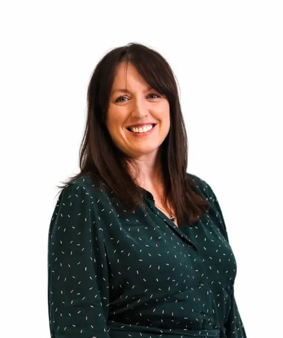
Dr Helen Walsh
Consultant Clinical Psychologist | Clinical Lead
ADOS Trained
Dr Helen Walsh is a Consultant Clinical Psychologist with over 30 years’ experience working with children, young people, and their families across NHS services. She specialises in delivering high-quality psychological and neurodevelopmental assessments, combining extensive clinical expertise with a warm, collaborative, and person-centred approach.
Dr Walsh is currently the Clinical Lead within an NHS CAMHS service, where she provides strategic leadership, service development, and clinical governance. She has led the development and ongoing delivery of a specialist neurodevelopmental assessment service, offering robust, evidence-based assessments for autism, ADHD, and related presentations. She is highly experienced in the use of standardised assessment tools, including the ADOS (Autism Diagnostic Observation Schedule), alongside a range of cognitive and neuropsychological assessments.
Alongside her assessment work, Dr Walsh has extensive experience supporting children and young people with a wide range of emotional, developmental, and mental health needs. Her therapeutic practice integrates evidence-based approaches, including CBT, DBT, EMDR, ACT, and systemic models, allowing her to tailor interventions to each individual’s needs.
At Refocus, Dr Walsh contributes as Clinical Lead for Neurodevelopmental Services, supporting the delivery of high-quality, clinically robust assessment pathways and working closely within the multidisciplinary team to ensure care is integrated, evidence-based, and individualised. She also provides clinical supervision, consultation, and training, supporting the ongoing development of high standards across the service.
Dr Walsh is passionate about improving outcomes for children and families and is known for creating a supportive, respectful environment where individuals feel heard, understood, and empowered.
-
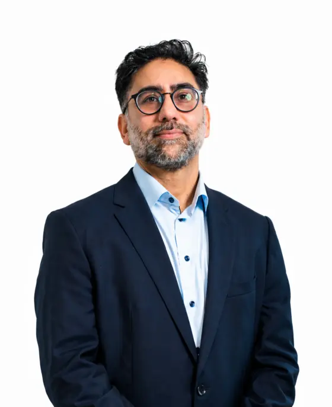
Dr Arif Qadir
Consultant Child & Adolescent Psychiatrist | Safeguarding Lead
ADI-R | DISCO-3 | Maudsley Adult ADHD Training
Dr Arif Qadir is a Consultant Child and Adolescent Psychiatrist with over 12 years’ experience, working across both NHS and independent Child and Adolescent Mental Health Services (CAMHS).
He has extensive experience in crisis intervention, having worked closely with CAMHS crisis and intensive support teams to support children and young people presenting with complex and high-risk difficulties, including:
- Acute emotional distress
- Self-harm
- Safeguarding concerns
Dr Qadir also has significant specialist experience in the assessment and management of eating disorders in children and young people, alongside his work within ADHD and broader neurodevelopmental pathways.
He is formally trained in ADI-R and DISCO-3 autism diagnostic assessments and has completed South London and Maudsley (Maudsley) training in adult ADHD assessments, enabling him to contribute to high-quality neurodevelopmental assessments across the lifespan where clinically appropriate.
At Refocus The Brain Hub, Dr Qadir plays a key role in delivering comprehensive neurodevelopmental and psychiatric assessments. He also holds responsibility as Safeguarding Lead, ensuring that clinical care is safe, ethical, and aligned with national standards and best practice.
Dr Qadir currently holds the role of Safeguarding Lead within South West Yorkshire NHS services, bringing strong expertise in:
- Clinical governance
- Risk management
- Safeguarding leadership
Alongside his clinical work, Dr Qadir brings extensive leadership and service development experience. He has led multidisciplinary teams, contributed to the design and improvement of complex assessment pathways, and supported the delivery of accessible, high-quality services across both NHS and independent settings.
He is experienced in clinical supervision and works collaboratively with families, schools, and partner agencies to ensure holistic and coordinated care.
Dr Qadir is passionate about early intervention, empowering children and young people to thrive, and continuously improving services to achieve meaningful and sustainable outcomes for families.
-
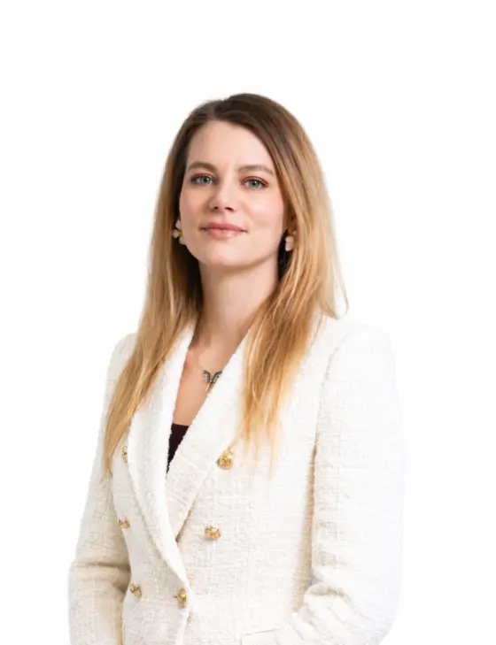
Denisa Anamaria Scripcariu
Clinical Psychologist | Applied Neuroscience & Brain Mapping Specialist
qEEG Brain Mapping
Denisa is a Clinical Psychologist with a developing specialisation in applied neuroscience and functional brain assessment. Her work is grounded in an integrative approach that brings together psychological understanding, neurophysiological data, and careful attention to individual context and lived experience.
Her early clinical experience includes work within an oncology hospital setting, where she developed insight into the psychological impact of serious illness, long-term treatment, and vulnerability. This experience shaped her understanding of emotional resilience, stress physiology, and the importance of compassionate, ethically grounded care.
Denisa has developed focused expertise in qEEG brain mapping, using functional brain data to support clinical formulation, psychoeducation, and personalised intervention pathways. Her work integrates psychological assessment with brain-based metrics to better understand patterns of emotional regulation, stress reactivity, attention, and trauma-related responses.
Alongside her clinical work, Denisa contributes to mental health education and interdisciplinary dialogue, including speaking at wellbeing and innovation events and delivering workshops on applied neuroscience and brain mapping for students and professionals.
At Refocus, Denisa supports the delivery of brain mapping and neuroscience-informed assessments, working within a multidisciplinary team to provide meaningful, individualised insights for patients and families.
Denisa is committed to evidence-informed, person-centred care and is known for her attentive listening and ability to translate complex psychological and neuroscientific concepts into clear, accessible understanding.
-
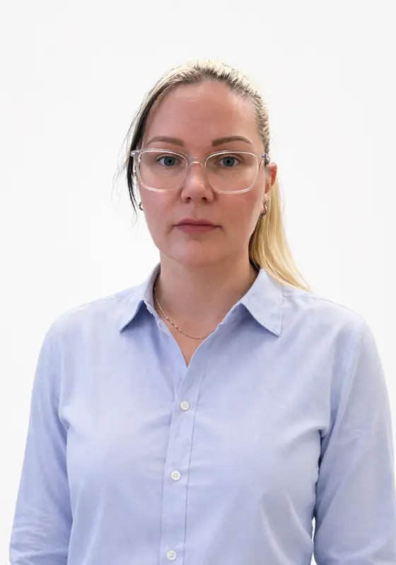
Sarah Williams
Advanced Clinical Practitioner | Women’s Neurodevelopmental Health Lead
RMN | V300 Non-Medical Prescriber | MSc Advanced Clinical Practice
Sarah Williams is an Advanced Clinical Practitioner with extensive experience across mental health nursing, primary care, and specialist services.
She has been a Registered Mental Health Nurse since 2010 and holds a BSc (Hons) in Mental Health Nursing, a BSc in Addiction Studies, and an MSc in Advanced Clinical Practice, completed with distinction in 2023.
Sarah has worked across a broad range of clinical settings, including:
- Acute inpatient services
- Community mental health teams
- CAMHS services
- Forensic mental health services
- Substance misuse services
- Primary care
Since 2020, Sarah has worked as a General Practice Advanced Clinical Practitioner, managing both physical and mental health presentations across the lifespan, with a strong emphasis on holistic, person-centred care.
Sarah has been prescribing for ADHD since 2019 and is an experienced V300 Non-Medical Prescriber, with particular expertise in:
- ADHD medication prescribing and optimisation
- Medication monitoring and safety
- Integrated treatment pathways
Her additional specialist training includes ECG interpretation through the Maudsley Hospital and completion of the British Menopause Society’s Principles and Practice of Menopause Care Resources Toolkit, supporting safe, evidence-based hormonal care.
Sarah is currently undertaking PhD studies examining the impact of perimenopause and menopause in neurodivergent women compared with neurotypical women, bringing a research-led perspective to an area that remains significantly under-recognised in clinical practice.
At Refocus – The Brain Hub, Sarah leads the Women’s Neurodevelopmental and Hormonal Health Service, with a specialist focus on the interaction between:
- ADHD and neurodivergence
- Hormonal transitions
- Mental wellbeing
She works closely within the multidisciplinary team to deliver integrated, neuroscience-informed care and clear, practical recommendations for patients and families.
Sarah also brings valuable lived experience to her clinical practice. She is neurodivergent herself, has experienced premature ovarian insufficiency, and is a parent to two neurodivergent children.
This combination of professional expertise, academic focus, and personal insight informs her compassionate and nuanced approach to care.
-
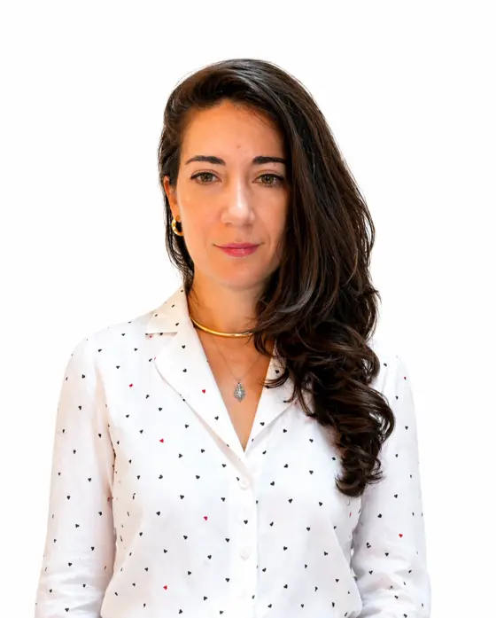
Dr Suzana Alexandra Corciova
Consultant Child & Adolescent Psychiatrist
GMC Registered | MRCPsych | CCT | ADI-R | UKAAN
Dr Suzana Alexandra Corciova is a Consultant Child and Adolescent Psychiatrist with UK specialist training and is a Member of the Royal College of Psychiatrists.
She has extensive experience working across both NHS and private sector services, supporting children, young people, adults, and their families.
Dr Corciova completed her core psychiatry training in London with NELFT, followed by higher specialist training in Child and Adolescent Psychiatry through the St Mary’s Training Scheme (CNWL).
She was awarded Membership of the Royal College of Psychiatrists (MRCPsych) in 2016 and achieved her Certificate of Completion of Training (CCT) in Child and Adolescent Psychiatry in 2021. She is fully GMC-registered and holds specialist registration in Child and Adolescent Psychiatry.
Alongside her medical training, Dr Corciova holds a degree in Ericksonian Psychotherapy, supporting a holistic and psychologically informed approach to assessment and treatment.
She has worked across a wide range of NHS and independent settings, supporting children, adolescents, and families presenting with complex emotional, behavioural, and neurodevelopmental needs.
In recent years, her clinical focus has been on neurodevelopmental assessments, including ADHD and autism, across both child and adult populations.
She has completed specialist training in recognised gold-standard assessment approaches, including:
- ADI-R autism diagnostic assessment
- UKAAN training for adult ADHD assessment
- National Autism Training Programme for Psychiatrists
Her assessments are developmentally informed, evidence-based, and aligned with UK best-practice standards.
Dr Corciova is fluent in:
- English
- Italian
- Romanian
This enables her to work effectively with individuals and families from diverse cultural backgrounds.
-
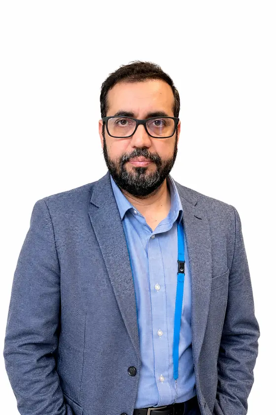
Dr Muhammad Adnan Hafeez
Consultant Psychiatrist | Adult ADHD & Neuropsychiatry
GMC Registered
Dr Muhammad Adnan Hafeez is a Consultant Psychiatrist based in Manchester with extensive experience working across NHS and independent mental health services. He provides assessment and treatment for adults presenting with a wide range of psychiatric and neurodevelopmental difficulties, combining evidence-based practice with a thoughtful, person-centred approach.
Dr Hafeez has significant experience in adult ADHD assessment and treatment, delivering comprehensive, clinically robust care tailored to each individual’s needs. His broader clinical interests include psychopharmacology, neuropsychiatry, and acquired brain injury, with a particular interest in the relationship between brain function, cognition, emotional wellbeing, and long-term mental health outcomes.
Alongside his clinical work, Dr Hafeez has held a number of senior leadership and educational roles within psychiatric services, including Clinical Tutor, Clinical Audit Lead, and medical member of a Trust Serious Incident Review Panel. He is actively involved in training and supervision and currently provides clinical supervision for psychiatric trainees and GP Specialty Trainees, supporting the development of safe, high-quality clinical practice.
Dr Hafeez also brings international experience in service development and clinical leadership, having contributed to the establishment of a new psychiatric department within a leading private healthcare facility in Riyadh, Saudi Arabia, between 2017 and 2020. This work involved supporting the development of modern psychiatric pathways and multidisciplinary models of care within an expanding healthcare system.
At Refocus, Dr Hafeez contributes to the delivery of adult psychiatric and ADHD assessments, working within the multidisciplinary team to provide integrated, evidence-based, and personalised care pathways. He is committed to delivering high-quality clinical care that is ethical, collaborative, and tailored to the complexity of each individual’s presentation.
Dr Hafeez is known for his calm, professional, and reflective approach, supporting patients to better understand their difficulties and move forward with clarity, confidence, and appropriate support.
-
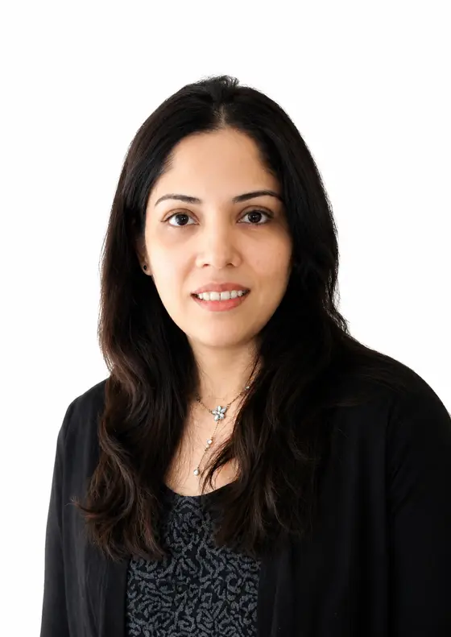
Dr Syeda Sabeen Ashar
Consultant Psychiatrist | Liaison Psychiatry & Adult ADHD
GMC Specialist Register | MRCPsych | CCT | Section 12 Approved
Dr Syeda Sabeen Ashar is a Consultant Psychiatrist with over two decades of medical experience working across NHS acute, community, and specialist psychiatric services. She is a GMC Specialist Register holder in General Adult Psychiatry, with Section 12 approval and Responsible Clinician status.
Dr Ashar has specialist expertise in Liaison Psychiatry and Adult ADHD, with extensive experience assessing and supporting working-age adults presenting with complex psychiatric and neurodevelopmental difficulties. Her clinical interests also include functional neurological disorder (FND), medically unexplained symptoms (MUS), and complex mental health presentations, with a strong focus on thoughtful, evidence-based care.
She completed her medical training at Dow Medical College, University of Karachi, before undertaking postgraduate psychiatric training in the UK. She was awarded Membership of the Royal College of Psychiatrists (MRCPsych) in 2015 and achieved her Certificate of Completion of Training (CCT) in General Adult Psychiatry in 2020.
Over the past several years, Dr Ashar has conducted hundreds of Adult ADHD assessments, delivering comprehensive diagnostic evaluations alongside personalised treatment and management plans. Her approach combines evidence-based pharmacological treatment, psychoeducation, holistic management, and functional support, helping individuals improve their personal, occupational, academic, and social wellbeing.
At Refocus, Dr Ashar contributes to the delivery of adult psychiatric and ADHD assessments and treatment pathways, working within the multidisciplinary team to provide integrated, patient-centred, and clinically robust care.
Dr Ashar is known for her calm, collaborative, and compassionate approach, supporting patients to feel understood, informed, and empowered throughout their care journey.
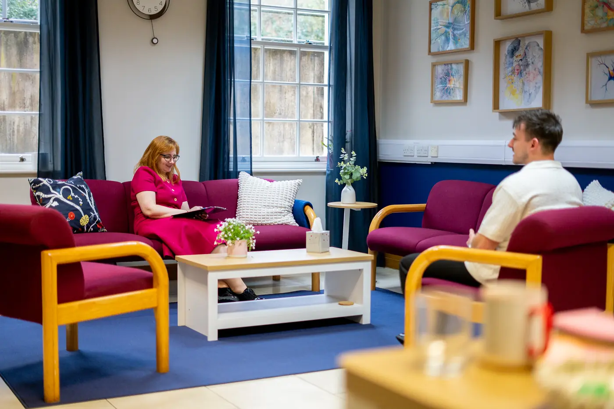
Book an appointment
No waiting lists. No referral from your GP required.
Start with a free 15-minute call. We’ll listen, answer your questions and help you choose the right clinician and pathway.
What we do
Explore our services
Three connected pathways: understand what is going on, see another layer of the picture, and get the right care for what comes next.
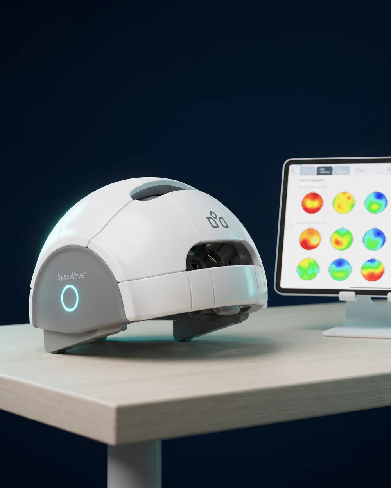
NeuroscienceqEEG brain mapping and neuromodulationObjective data on brain activity, plus TMS, neurofeedback and photobiomodulation. CareTreatment that continues beyond diagnosisMedication pathways, the NeuroHormone Clinic and at-home brain therapy.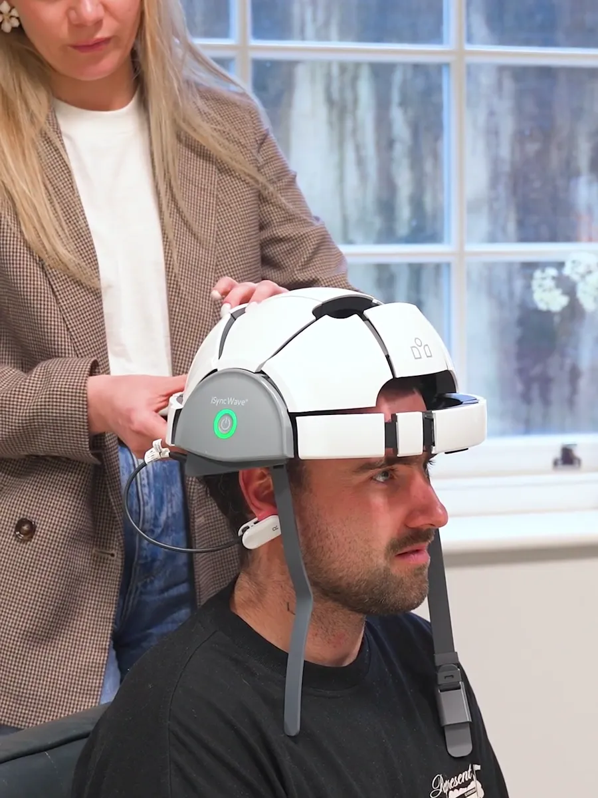
Careers
Join our team
Be part of a consultant-led, neuroscience-driven team that’s redefining how ADHD and autism care is delivered in the UK.
Why work with us
Neuroscience-led environment
Work at the intersection of psychiatry and cutting-edge brain science.
Multidisciplinary team
Collaborate with psychiatrists, psychologists and nurse practitioners.
CPD & training support
Ongoing professional development and specialist training opportunities.
Person-centred care
Ethical, evidence-based practice that puts patients first.
Send your CV and a short note about the role you’re interested in.
Our clinicians are registered with and recognised by